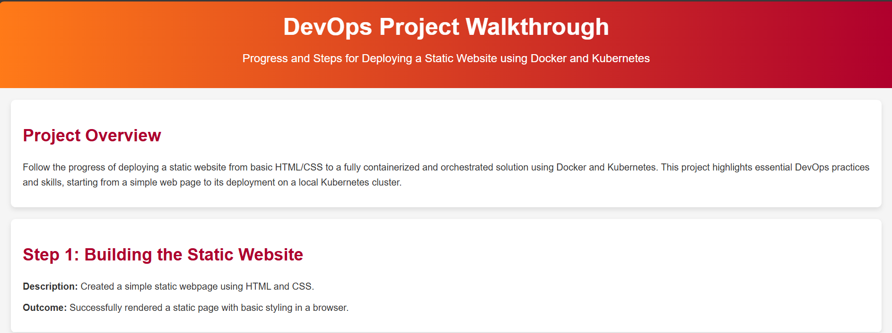

Progress and Steps for Deploying a Static Website using Docker and Kubernetes
Follow the progress of deploying a static website from basic HTML/CSS to a fully containerized and orchestrated solution using Docker and Kubernetes. This project highlights essential DevOps practices and skills, starting from a simple web page to its deployment on a local Kubernetes cluster.
Description: Created a simple static webpage using HTML and CSS which you are viewing right now!
Screenshot:
Outcome: Successfully rendered a static page with basic styling in a browser.
Description: Created a Docker image for the static website using Nginx as the web server.
Dockerfile:
# Dockerfile
FROM nginx:1.27.2-alpine
COPY index.html /usr/share/nginx/html
COPY style.css /usr/share/nginx/html
EXPOSE 80
CMD ["nginx","-g","daemon off;"]
Commands:
docker build -t dockerhub_username/static-website:v1.0.0 .Outcome: Successfully built a Docker container to serve the static page locally.
Description: Tagged and pushed the Docker image to DockerHub for deployment use.
Commands:
docker push dockerhub_username/static-website:v1.0.0Outcome: The Docker image is now accessible on DockerHub
Description: Created Kubernetes deployment and service YAML files for the Docker image.
YAML Files:
# deployment.yaml
apiVersion: apps/v1
kind: Deployment
metadata:
name: nginx-deploy
labels:
app: nginx-deploy
spec:
replicas: 2
selector:
matchLabels:
app: nginx-deploy
template:
metadata:
labels:
app: nginx-deploy
spec:
containers:
- name: nginx
image: dockerhub_username/static-website:v1.0.0
ports:
- containerPort: 80
# service.yaml
apiVersion: v1
kind: Service
metadata:
name: nginx-service
spec:
selector:
app: nginx-deploy
type: LoadBalancer
ports:
- protocol: TCP
port: 80
targetPort: 80
type: LoadBalancer
Commands:
kubectl apply -f deployment.yaml
kubectl apply -f service.yamlOutcome: The website is successfully deployed and accessible via a LoadBalancer service on Kubernetes.
This DevOps project demonstrates end-to-end deployment of a static website using Docker and Kubernetes. Each stage builds on the previous one, highlighting skills in containerization and orchestration. This site showcases how simple static pages can scale to robust, cloud-ready deployments.